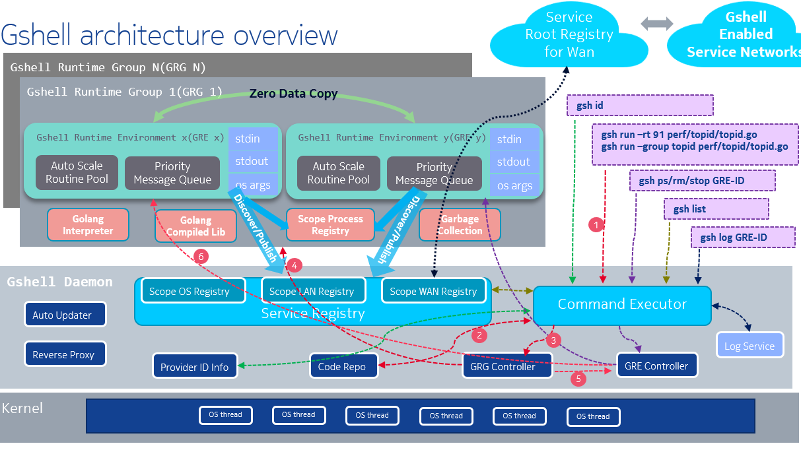

1. adaptiveservice
godevsig/adaptiveservice是用golang实现的一个简单的服务发现框架.
- 服务端发布服务, 客户端发现服务.
- 服务使用{"publisher", "service"}来标识.
- publisher类似github repo中的组织名或用户名, 标识这个服务的代码拥有者.
- service就是服务的名字, 类似github repo的repo名.
- 在一个服务网络中, 可以有同名服务的多个实例, 对客户端来说, 无论哪个实例, 都提供一样的服务. 客户端可以根据策略, 比如随机策略, 或者延迟最小策略, 选择其中一个实例来通信.
- 支持root registry和局域网广播发现.
- 消息的交互只有三个API.
- Send(msg)
msg一般定义于服务端, 是golang的struct, 表示服务端可以处理哪些struct. client import后就可以直接使用. - Recv(msgPtr)
msgPtr是要接收的msg的指针. 在golang中, 由于gc, 并不需要提前申请内存. - SendRecv(msg, msgPtr)
这个形式的API可以当作RPC来使用.
- Send(msg)
- server端的消息处理使用弹性伸缩的worker pool, 自动支持并发.
- client端支持多路复用, 提高并发.
- 支持在同一个进程内使用, 支持在同一个系统内使用, API都一样.
- 内置反向代理, 从而NAT内的服务也能被外部发现并连接.
参考:
1.1. hello例子
1.1.1. client端
client要先发现并连接到服务, 然后就可以收发消息.
package main
import (
"fmt"
as "github.com/godevsig/adaptiveservice"
msg "github.com/godevsig/adaptiveservice/examples/hello/message"
)
func main() {
c := as.NewClient()
conn := <-c.Discover("example", "hello")
if conn == nil {
fmt.Println(as.ErrServiceNotFound("example", "hello"))
return
}
defer conn.Close()
request := msg.HelloRequest{Who: "John", Question: "who are you"}
var reply msg.HelloReply
if err := conn.SendRecv(request, &reply); err != nil {
fmt.Println(err)
return
}
fmt.Println(reply.Answer)
}
1.1.2. server端
server端需要定义可以处理的struct, 以及其handler. 在这个struct到达server端的时候, 框架在worker pool里分配worker, handler被框架在worker中调用.
message.go中定义消息struct如下:
package message
import (
"strings"
as "github.com/godevsig/adaptiveservice"
)
// HelloRequest is the request from clients
type HelloRequest struct {
Who string
Question string
}
// HelloReply is the reply of HelloRequest to clients
type HelloReply struct {
Answer string
}
// Handle handles msg.
func (msg HelloRequest) Handle(stream as.ContextStream) (reply interface{}) {
answer := "I don't know"
question := strings.ToLower(msg.Question)
switch {
case strings.Contains(question, "who are you"):
answer = "I am hello server"
case strings.Contains(question, "how are you"):
answer = "I am good"
}
return HelloReply{answer + ", " + msg.Who}
}
func init() {
as.RegisterType(HelloRequest{})
as.RegisterType(HelloReply{})
}
helloserver.go中启动service:
package main
import (
"fmt"
as "github.com/godevsig/adaptiveservice"
msg "github.com/godevsig/adaptiveservice/examples/hello/message"
)
func main() {
s := as.NewServer().SetPublisher("example")
knownMsgs := []as.KnownMessage{msg.HelloRequest{}}
if err := s.Publish("hello", knownMsgs); err != nil {
fmt.Println(err)
return
}
if err := s.Serve(); err != nil { // ctrl+c to exit
fmt.Println(err)
}
}
2. gshell
godevsig/gshellos是基于adaptive service的一个go服务编排的框架. gshellos使用了go解释器yaegi, 使gshell框架得以在任意gshell节点运行位于中央仓库grepo下的go代码.

文档:
3. topid
topid是基于gshell的一个app, 代码位于grepo, 可以采集linux的进程信息, 并配合topid chart服务, 可以在web上实时显示CPU和MEM的占用.
得益于gshell, topid很方便在各个CPU arch下面运行, 没有运行时依赖.